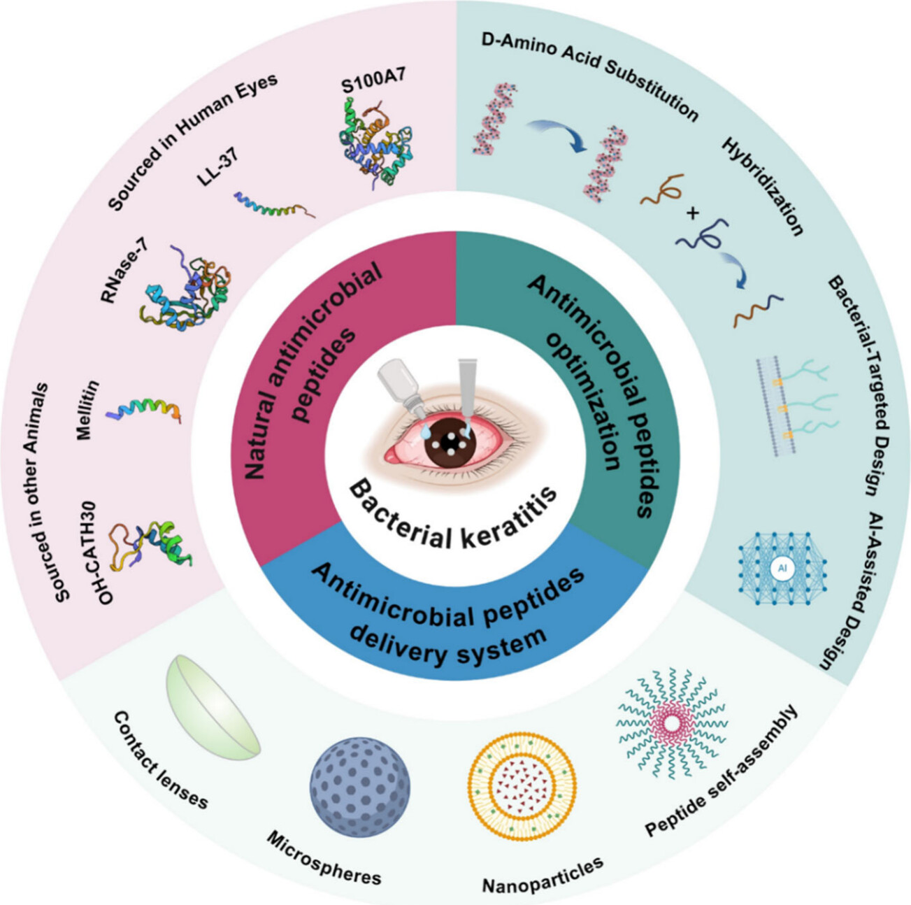

Neuroscience, Antimicrobials, and Summer Lab Work
How one summer project deepened my curiosity for the brain, disease-fighting molecules, and the role of AI in modern biology.
Published July 2025
This summer, I stepped into the world of computational biology—and honestly, it was more exciting than I expected.
My project focused on identifying novel antimicrobial peptides using AI tools. Working with real data from the GRAMPA database and experimenting with different ML models, I started to see how raw biological data can be translated into something potentially life-saving.
But what surprised me most was how this work tied back into my broader interest in neuroscience. Understanding how microscopic interactions affect macroscopic systems—like the human brain—showed me how interdisciplinary biology really is.
This lab experience wasn’t just about data. It taught me how to ask good questions, chase interesting hypotheses, and value precision (even when code breaks for the 5th time that hour).